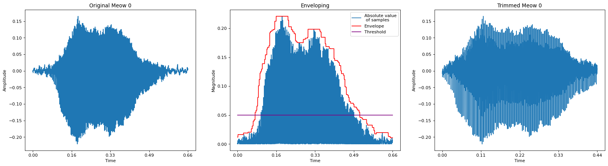
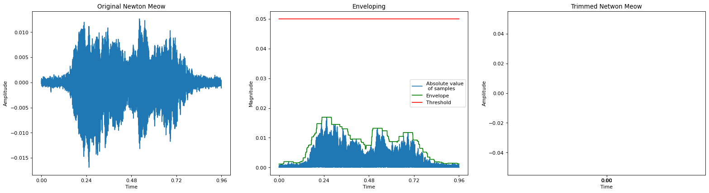
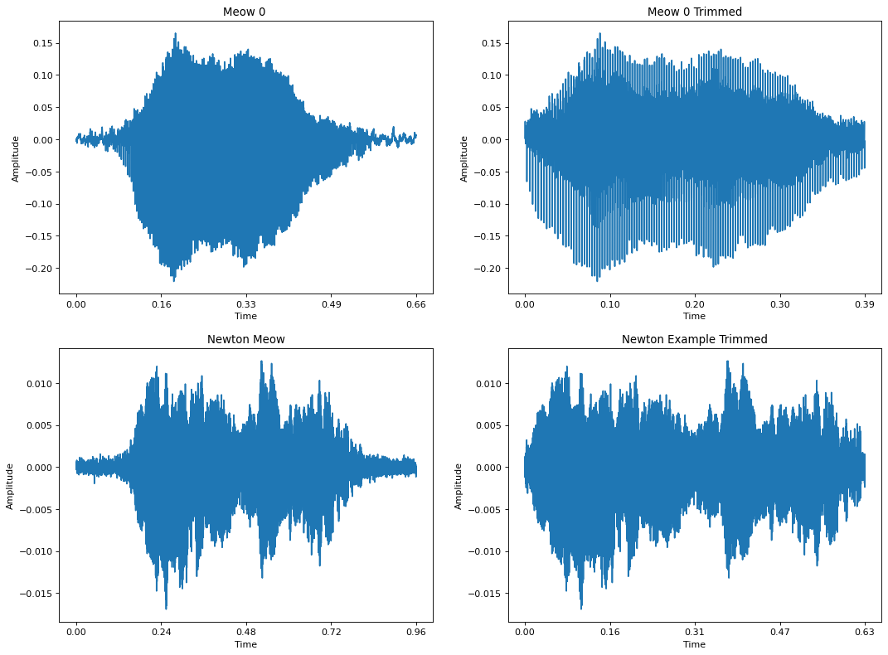

Preprocessing for Audio Classification: Trimming Silence
Code for this post can be found here.
I recently encountered an interesting problem while working on a system that can detect cat meows in a real-time audio stream. One of the critical components in this system is a machine learning model that can take in audio data and classify it as containing a meow or not. To train the model, I need a bunch of audio clips of meows and a bunch of clips of not-meow sounds. For meows, I’ve been scraping YouTube cat compilations, using Kaggle, and recording my own cats. For not-meows, I’m using the UrbanSound8K dataset. Initially, I assembled 100 or so clips for each of the 2 classes, extracted some features (a topic for a future post), and fit a classifier. It achieved perfect accuracy in training and on my test set. I wrote a little script to get live audio from my laptop’s mic and run it through my model in real-time. The predictions were all over the place. Eventually, I realized a major problem with my data after watching this video by Seth Adams. Here are a few example waveforms from each class in my dataset.

Notice how the meow examples’ waveforms tend to taper at the ends, while the not-meows don’t. It’s like if you were building a dogs vs. cats binary image classifier and every image of a dog in your dataset had a 10 pixel wide black border around it. The easiest way to identify a dog would be to look for this border. Similarly, the easiest way to identify a meow in this case would be to check for the tapered ends. That’s what happened to my model. Once I applied the envelope-based technique described in the video above, my model was no longer perfectly accurate in training. Let’s check out the code for that envelope function.
def envelope(y, rate, threshold):
mask = []
y = pd.Series(y).apply(np.abs)
y_mean = y.rolling(window=int(rate/20),
min_periods=1,
center=True).max()
for mean in y_mean:
if mean > threshold:
mask.append(True)
else:
mask.append(False)
return mask, y_mean
pd is Pandas and np is numpy. This function takes a sequence of audio samples (y), a sample rate (rate), and a magnitude threshold (threshold). First, we convert the audio samples to a Pandas Series and take their absolute value. We care about the magnitude of our samples, not their sign, as greater magnitude means louder volume. Next, we use Pandas’s rolling function for Series objects to produce a rolling window over the audio data and take the max over each step of the window. It wasn’t immediately obvious to me how rolling works, so I drew up this example.

window_size is the length of the window we’ll slide over y. min_periods determines how many values must be in the window for an operation like max to return a value (i.e. not NaN). If center is False, the window starts with its rightmost slot over the first element of y, and ends with it over the last element of y. If center is True, the center slot is used instead.
Back to the envelope function. We roll a window over of the absolute value of the samples, advancing one sample at a time, and taking the max at each step. The window size is a 20th of the sample rate. The sample rate is the number of samples per second, so we’re looking at a 20th of a second of samples in each window. We set center to True and min_periods to 1, so the results should contain no NaNs. I’m not sure why the result is called y_mean. I think y_envelope would be a better name.
In physics and engineering, the envelope of an oscillating signal is a smooth curve outlining its extremes.
At each step of the window, we are taking the greatest magnitude sample in the window, i.e., we are finding the extreme in each window. This series of values acts as an envelope over the signal. Let’s see what this envelope looks like using the first meow example from earlier.

Once we have an envelope, the function compares the envelope’s values with the threshold and builds a mask that’s the same length as y. If the envelope is less than the threshold, we mark it with False in the mask, and True otherwise. We return the envelope and the mask. The mask can then be used to cut off the quiet tails of the original audio. Wherever the mask is False, we remove the corresponding sample from the audio. Looking at the example above, it seems like a threshold of 0.05 would cut the tails pretty well. Let’s try it.

Comparing the first plot and the last, you can see that we were able to trim about 0.22 seconds of silence from the audio. The ends of the waveform are less obviously tapered than before. We could try a higher threshold to attempt to make the shape even better. But, there’s a problem with this method. This function is sensitive to the scale of the data. If the scale of the amplitude values is different between two audio clips, it’s likely that a single threshold won’t work well for both. For example, check out what this function with the same threshold does to a quiet clip of my cat Newton meowing.

Here, we trimmed the entire clip because the threshold was too high. To avoid having to adjust the threshold for every clip, the threshold needs to automatically adjust based on the scale of the data. One idea would be to set the threshold automatically based on the maximum value of the envelope for a given clip. For instance, we could say that anything below 10% of that maximum value is silence. But, rather than re-write the function to do this, librosa already has a solution.
LibROSA is a python package for music and audio analysis. It provides the building blocks necessary to create music information retrieval systems.
librosa’s function is called trim, and it sort of does what I just described. First, some audio and DSP background is required, so I’ll go over that first.
Loudness
There are many ways to measure the loudness, or volume, of an acoustic signal….All share the same feature that when the amplitude is larger (all other things being equal) the signal gets louder.
— Kurt Kosbar’s Digital Communications class lecture notes (Missouri University of Science and Technology)
In solving the problem of trimming silence from the beginning and end of an audio clip, we need some measure of loudness, so that we can say, “Sounds below this loudness threshold are silence, clip them out.” We’ve already seen one metric: maximum magnitude over a short time interval. Another is average power over a short time interval.
Average Power
To calculate the average power of a discrete signal over some time interval, we square all the samples and take the arithmetic mean of those squares. Squaring the samples ensures that they’re all positive so that negative and positive samples of equal magnitude contribute equally to the result. This makes sense; our ear can’t distinguish between negative and positive audio samples of the same magnitude. If we only wanted a single value for the loudness of an entire audio clip, we could just calculate the average power over all the samples. If we do that with the first meow example from earlier (Meow 0), we get an average power of 0.0015. We often work with decibels when talking about power. This is the case in librosa’s trim function, too.
Decibels
A bel is a unit of measurement comparing two quantities, such as power. If we are want to compare 2 power values, P1 and P2, in terms of bels, we compute log(P2/P1). If P2 was 10 times as big as P1, we’d say P2 is 2 bels above P1. If the ratio was 100x, P2 would be 3 bels above P1. Increasing by a single bel is pretty huge jump. To make them more wieldy, we almost exclusively use decibels instead, which are 1/10 of a bel.
So, how do we convert a power value like the one we got above to dB? I just said we need two power quantities to compute dB, but we only have one. That’s where the idea of a reference value comes in. The reference value is what you set P1 to in the dB calculation of power. For instance, it’s common to set P1 to 1e-3 and refer to the result as dBm, i.e. dB with a reference value of milliwatt (1e-3 watts). Setting the reference value appropriately is key to our usage of trim, which you’ll see shortly.
How librosa.effects.trim Works
The functions accepts 5 parameters, which are well-described in the code comments/documentation:
Parameters
----------
y : np.ndarray, shape=(n,) or (2,n)
Audio signal, can be mono or stereo
top_db : number > 0
The threshold (in decibels) below reference to consider as
silence
ref : number or callable
The reference power. By default, it uses `np.max` and compares
to the peak power in the signal.
frame_length : int > 0
The number of samples per analysis frame
hop_length : int > 0
The number of samples between analysis frames
Most of the work trim does is handled by the helper function _signal_to_frame_nonsilent, which takes all the same parameters as trim. Let’s walk through how this function works.
- Convert the samples to mono, if there’s more than one channel. To do this, we just average the samples of each channel together at each time step, collapsing N channels to 1 (see librosa.core.to_mono).
- Compute the root mean square (RMS) of a bunch of different overlapping frames of the samples (see librosa.feature.rms). RMS is just the square root of average power.
- Those frames have frame_length samples each. Overlap is controlled by the hop_length parameter. If frame_length was 4 and hop_length was 4, there would be 0 overlap. If hop_length was instead 2, there would be 50% overlap. Overlapping frames is common in DSP: it has a smoothing effect and also helps mitigate loss of spectral information, which we might be interested in if we’re going to be working in the frequency domain.
- The rms function also centers the samples by adding frame_length // 2 padding to either end of the samples. The padding is reflective. You can read about numpy’s reflect mode of padding here. I don’t think this step is strictly necessary since we’re working in the time domain. Centering like this is useful if we’re going to be working in the frequency domain because it prevents the data at the beginning and end of the samples from being underepresented, which is the same problem we have if we don’t overlap our frames. You can read a bit more about this on Wikipedia’s page for Welch’s method, a method for estimating the power at different frequencies in a signal. librosa’s rms function works on spectrograms in addition to time domain samples, and librosa’s short time Fourier transform (STFT) method defaults to frame overlapping and centering the data before taking the STFT. I suspect this preprocessing, centering and overlapping, is done in the time domain case so that the RMS results are similar to what you’d get if you passed the signal’s spectrogram instead.
- After centering and framing the data, rms computes the power of each frame in the same way I did earlier, by squaring all the samples in each frame and taking the mean of those squares.
- rms returns the square root of power, which is the definition of RMS.
- signal_to_frame_nonsilent converts this RMS value back to power by squaring it.
- The power of each frame is then converted to dB, using a reference value equal to the maximum power across all frames. This is the key to making the trimming insensitive to the scale of the data.
- _signal_to_frame_nonsilent then compares each frame’s dB with negative top_db. This is effectively asking, “is the power in this frame greater than top_db below the maximum power?” We ask every frame this same question and record the results in a mask, where True means the power was enough to consider the frame nonsilent (defined as negative top_db), and False means the frame is silent.
From here, trim uses this mask to compute where the audio starts and ends, clips that non-silent interval out of the audio, and returns the clip.
Conclusion
librosa’s trim isn’t sensitive to the scale of the data. The threshold depends on the maximum average power across a bunch of frames of the audio, so it adapts depending on the particular audio clip, rather than being a fixed value. Let’s see how trim does on Meow 0 and the quiet Newton meow, which was destroyed by the prior method. I’ll set top_db to 12.

Both were trimmed nicely, and we only had to set the threshold once (12 dB) despite the different amplitude scales between the two clips.
Acknowledgments
A big thanks to Seth Adams for his audio classification code and YouTube series. This is the best material I’ve found online for getting started with audio classification, if you’ve already got some deep learning experience. Thanks to Kurt Kosbar at Missouri S&T for his lecture notes on loudness.